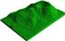
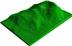
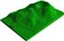

R Screenshots and Graphics
Unix desktop
box and whisker plots
piechart
pairs plot
coplot
3d plot of a surface

image and 3d plot of a volcano
 Unix desktop
Unix desktop box and whisker plots
box and whisker plots coplot
coplot  image and 3d plot of a volcano
 image and 3d plot of a volcano